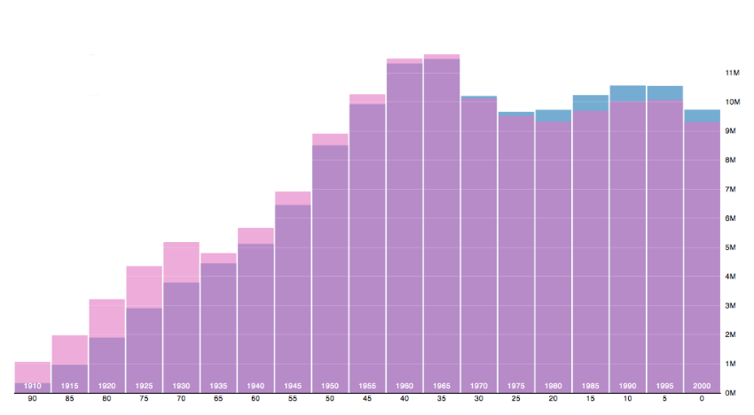
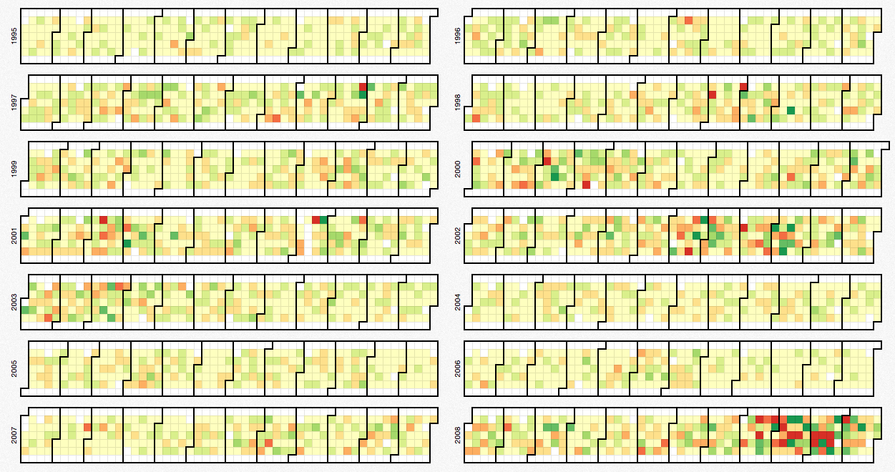
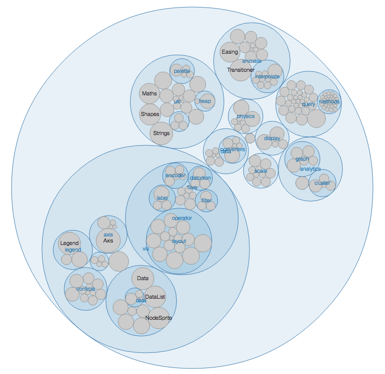

D3 is a JavaScript library for manipulating documents based on data.
Yes... and no.
Yes, you can create regular charts..
Source: D3.js Sample; Population Pyramid
But you can also create...
Source: D3.js Sample; Dow Jones, 1995-2008
Or create...
Source: D3.js Sample; Flare Code Size
D3 allows you to bind arbitrary data to a Document Object Model (DOM), and then apply data-driven transformations to the document.
Source: d3js.org
D3 is not a monolithic framework that seeks to provide every conceivable feature. Instead, D3 solves the crux of the problem: efficient manipulation of documents based on data.
Source: d3js.org
Let's start with our data
var data = [
{ stat:"strength", value:400 },
{ stat:"dexterity", value:1000 },
{ stat:"intelligence", value:450 },
{ stat:"vitality", value:600 }
];
Add Headers
d3.select("#table-id")
.append("tr")
.selectAll("th")
.data(data)
.enter()
.append("th")
.text(function(d) {
return d.stat;
});
Add Row
d3.select("#table-id")
.append("tr")
.selectAll("td")
.data(data)
.enter()
.append("td")
.text(function(d) {
return d.value;
});
With our data, we built a table.
Amazing. Yet true.
var scaleFx = d3.scale.linear() .domain([0, 100]) .range([10, 20]); var scaledvalue = scaleFx(domainValue); scaleFx(0); // 10 scaleFx(50); // 15 scaleFx(100); // 20
var scaleFx = d3.scale.ordinal()
.domain(["Archer", "Kirk", "Picard", "Sisko", "Janeway"])
.range([5,7,9,13,23]);
var rangeValue = scaleFx(category);
scaleFx("Archer"); // 5
scaleFx("Picard"); // 9
scaleFx("Sisko"); // 13
... now let's make a chart
// let's use the same data
var data = [
{ stat: "strength", value: 400 },
{ stat: "dexterity", value: 1000 },
{ stat: "intelligence", value: 450 },
{ stat: "vitality", value: 600 }
];
var g = d3.select("#div-id")
.append("svg:svg")
.attr("width", width + margin)
.attr("height", height + margin)
.append("svg:g");
Create X Scale
var x = d3.scale.linear()
.domain([0, max])
.range([margin, width]);
Create Y Scale
var y = d3.scale.linear()
.domain([0, 3])
.range([0, height - barHeight - barMargin]);
Create bars
g.selectAll(".bars")
.data(data)
.enter()
.append("svg:rect")
.attr("x", x(0))
.attr("y", function(d, i) {
return y(i);
})
.attr("width", function(d) {
return x(d.value) - margin;
})
.attr("height", barHeight);
Add class to bars
g.selectAll(".bars")
.data(data).enter()
.append("svg:rect")
.attr("class", function(d) {
return "bars " + d.stat;
})
.attr("x", x(0))
.attr("y", function(d, i) { return y(i); })
.attr("width", function(d) {
return x(d.value) - margin;
})
.attr("height", barHeight);
X-Axis
g.append("svg:line")
.attr("x1", x(0))
.attr("x2", x(max))
.attr("y1", height + 5)
.attr("y2", height + 5)
.attr("class", "x-axis");
X Ticks
g.selectAll("x-tick")
.data(x.ticks(5)).enter()
.append("svg:line")
.attr("class", "tick")
.attr("x1", function(d) { return x(d) })
.attr("x2", function(d) { return x(d) })
.attr("y1", height + 5)
.attr("y2", height);
X Labels
g.selectAll("x-label")
.data(x.ticks(5))
.enter()
.append("svg:text")
.attr("class", "x-label")
.text(function(d) { return d; })
.attr("x", function(d) { return x(d); })
.attr("y", height + 25)
.attr("text-anchor", "middle");
Bar labels
g.selectAll("bar-label")
.data(data)
.enter()
.append("svg:text")
.text(function(d) { return d.stat; })
.attr("class", "bar-label")
.attr("x", function(d) { return x(15); })
.attr("y", function(d, i) {
return y(i) + (barHeight / 2) + 5;
});
Stat Labels
g.selectAll(".stat-label")
.data(data).enter()
.append("svg:text")
.text(function(d) { return d.value; })
.attr("class", "stat-label")
.attr("x", function(d) {
return x(d.value) - 10;
})
.attr("y", function(d, i) {
return y(i) + (barHeight / 2) + 5;
})
.attr("text-anchor", "end");
var data = {
"barb": [{ stat:"strength", value:900 },
{ stat:"dexterity", value:400 },
{ stat:"intelligence", value: 250 },
{ stat:"vitality", value:800 }],
"monk": [{ stat:"strength", value:200 },
{ stat:"dexterity", value:850 },
{ stat:"intelligence", value:250 },
{ stat:"vitality", value:600 }],
"wiz": [{ stat:"strength", value:330 },
{ stat:"dexterity", value:230 },
{ stat:"intelligence", value:990 },
{ stat:"vitality", value:300 }],
"witch": [{ stat:"strength", value:200 },
{ stat:"dexterity", value:470 },
{ stat:"intelligence", value:880 },
{ stat:"vitality", value:650 }]
}
Transition bars
g.selectAll(".bars")
.data(data)
.transition()
.duration(2000)
.attr("width", function(d) {
return x(d.value) - margin;
});
Transition labels
g.selectAll(".stat-label")
.data(data)
.transition()
.duration(2000)
.attr("x", function(d) {
return x(d.value) - 10;
})
.text(function(d) {
return d.value;
});
Our data
var data = [
{ date: Date.parse("4/6/2012"), hours: 3 },
{ date: Date.parse("4/16/2012"), hours: 4 },
{ date: Date.parse("4/26/2012"), hours: 2 },
{ date: Date.parse("5/6/2012"), hours: 5 },
{ date: Date.parse("5/26/2012"), hours: 3 },
{ date: Date.parse("5/30/2012"), hours: 6 }
]
X Scale
var startDate = Date.parse("4/1/2012");
var endDate = Date.parse("5/30/2012");
var x = d3.time.scale()
.domain([startDate, endDate])
.range([margin, width]);
Y Scale
var y = d3.scale.linear()
.domain([0, 6])
.range([height, margin]);
Line
var line = d3.svg.line()
.x(function(d) {
return x(d.date);
})
.y(function(d) {
return y(d.hours);
});
g.append("svg:path")
.attr("class", "line")
.attr("d", line(data));
X Axis
var xAxis = d3.svg.axis()
.orient("bottom")
.scale(x)
.tickSubdivide(0)
.tickSize(6, 3, 1)
.ticks(d3.time.weeks, 1)
.tickFormat(d3.time.format("%m/%d"));
Draw X Axis
g.append("svg:g")
.attr("class", "x-axis")
.attr("width", width)
.attr("transform", "translate(0," + height + ")")
.call(xAxis);
Y Axis
var yAxis = d3.svg.axis()
.orient("left")
.ticks(3)
.tickSize(6,1)
.scale(y);
Draw Y Axis
g.append("svg:g")
.attr("class", "y-axis")
.attr("transform", "translate(" + margin + ",0)")
.call(yAxis);
Add Points
g.selectAll(".point")
.data(data)
.enter()
.append("svg:circle")
.attr("class", "point")
.attr("cy", function(d) { return y(d.hours); })
.attr("cx", function(d) { return x(d.date); })
.attr("r", 4);
Our Data
var data = [
{ percent: 80, label: "Made up stats"},
{ percent: 20, label: "Scary truth"}
];
Create svg
var g = d3.select("#pie-chart")
.append("svg:svg")
.attr("class", "pie-chart")
.attr("width", pieChart.width)
.attr("height", pieChart.height)
.append("svg:g");
Create layout & color fxs
var pie = d3.layout.pie()
.value(function(d) {
return d.percent;
});
var arc = d3.svg.arc()
.innerRadius(0)
.outerRadius(200);
var color = d3.scale.category10();
Draw arcs
var arcsG = g.append("svg:g")
.attr("class", "arcs")
.attr("transform", "translate(" + width/2 + "," + height/2 + ")");
arcsG.selectAll("path")
.data(pie(data))
.enter()
.append("svg:path")
.attr("d", arc)
.attr("class", "pie-section")
.attr("fill", function(d,i) { return color(i); });
Change inner radius
var arc = d3.svg.arc()
.innerRadius(100)
.outerRadius(200);
Our Data
var data = {
name: "Foobar, Inc.",
children: [ {
name:"Accounting",
children: [
{ name: "Bob", salary: 50000 },
{ name: "Sue", salary: 50000 }
]
}, {
name:"Computer Science",
children: [
{ name: "Joe", salary: 150000 },
{ name: "Bubba", salary: 30000 }
]
}]};
Create svg
var g = d3.select("#tree-chart")
.append("svg:svg")
.attr("width", width + margin)
.attr("height", height + margin)
.append("svg:g")
.attr("transform", "translate(0, 20)");
Tree Layout
var tree = d3.layout.tree()
.size([width - margin, height - margin]);
var nodes = tree.nodes(data);
var links = tree.links(nodes);
var diagonal = d3.svg.diagonal()
.projection(function(d) {
return [d.x, d.y];
});
Nodes
var node = g.selectAll("g.node")
.data(nodes)
.enter()
.append("svg:g")
.attr("transform", function(d) {
return "translate(" + d.x + "," + d.y + ")";
});
node.append("svg:circle")
.attr("r", 3.5);
Node labels
node.append("svg:text")
.attr("class", "node-label")
.attr("dx", 10)
.attr("dy", 6)
.text(function(d) { return d.name; });
Links
g.selectAll("pathlink")
.data(links)
.enter()
.append("svg:path")
.attr("class", "link")
.attr("d", diagonal);
United States in SVG
http://en.wikipedia.org/wiki/File:Blank_US_Map.svg
Our data
var data = [{ state:"TX", value:65 },
{ state:"WA", value:54 },
{ state:"CA", value:25 },
{ state:"CO", value:35 },
{ state:"AL", value:72 },
{ state:"FL", value:13 },
{ state:"OK", value:22 },
{ state:"OH", value:69 },
{ state:"MI", value:54 },
{ state:"VA", value:38 },
{ state:"MS", value:43 },
{ state:"GA", value:49 },
{ state:"NY", value:90 }];
Opacity
var opacity = d3.scale.linear().domain([0,100]).range([.5, 1]);
for(var i in data) {
var d = data[i];
d3.selectAll("#" + d.state)
.attr("style", "")
.attr("class", "default-style")
.attr("opacity", opacity(d.value))
.attr("fill", "#0000FF");
}
Color
var color = d3.scale.linear()
.domain([0,100])
.range(["#000000", "#0000FF"]);
for(var i in data) {
var d = data[i];
d3.selectAll("#" + d.state)
.attr("style", "")
.attr("class", "default-style")
.attr("opacity", 1)
.attr("fill", color(d.value));
}
Color Brewer
var color = d3.scale.ordinal()
.domain([0,100])
.range(colorbrewer.Blues[9]);
for(var i in data) {
var d = data[i];
d3.selectAll("#" + d.state)
.attr("style", "")
.attr("class", "default-style")
.attr("opacity", 1)
.attr("fill", color(d.value));
}
ColorBrewer's colors are color blind friendly.
80% of the chart will be done in 20% of the time.
The last 20% of work getting the chart awesome will take 80% of your time.
D3 can result in a large number of lines of code
But the code is simple once you understand the pattern.
It is awesome telling clients and designers:
Other charting libraries might get a chart out faster but few can compete with D3's flexibility.
BSD-3-Clause
Commerical use approved